0 → 1
Design system
Built the visual language and components the whole app now runs on.
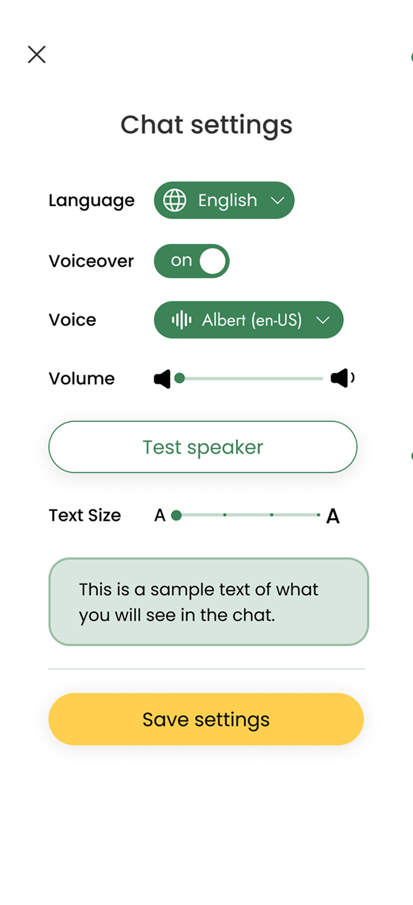
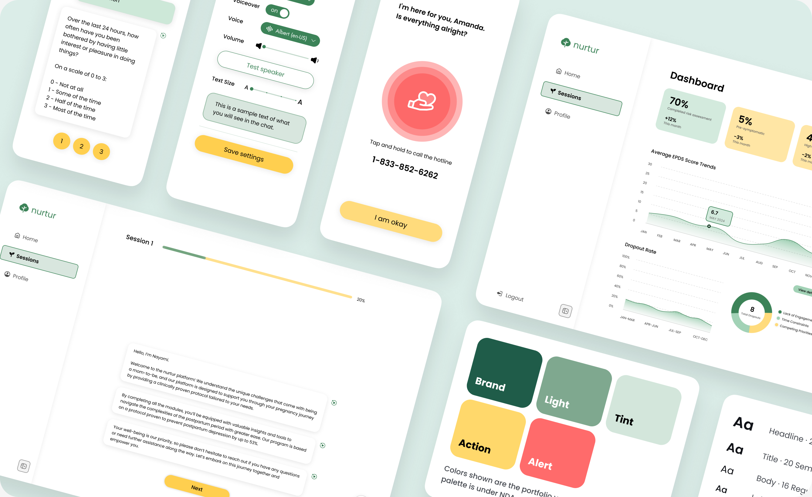

nurtur is a mobile app that helps pregnant women and new moms prevent postpartum depression, through short guided chatbot sessions, weekly mood check-ins and fast access to professional help.
Built the visual language and components the whole app now runs on.

Shorter scripts, progress, replay, a modern UI and personal settings.
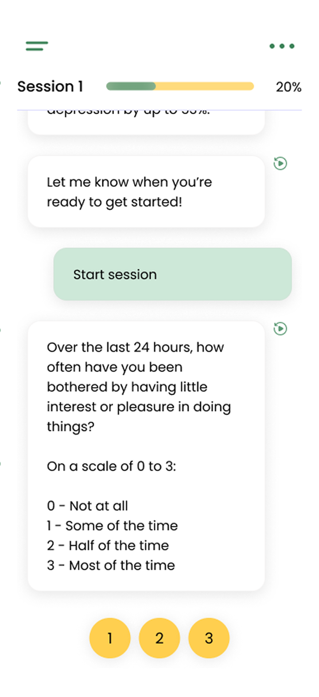
Immediate response, autonomous choice and error-tolerant design.
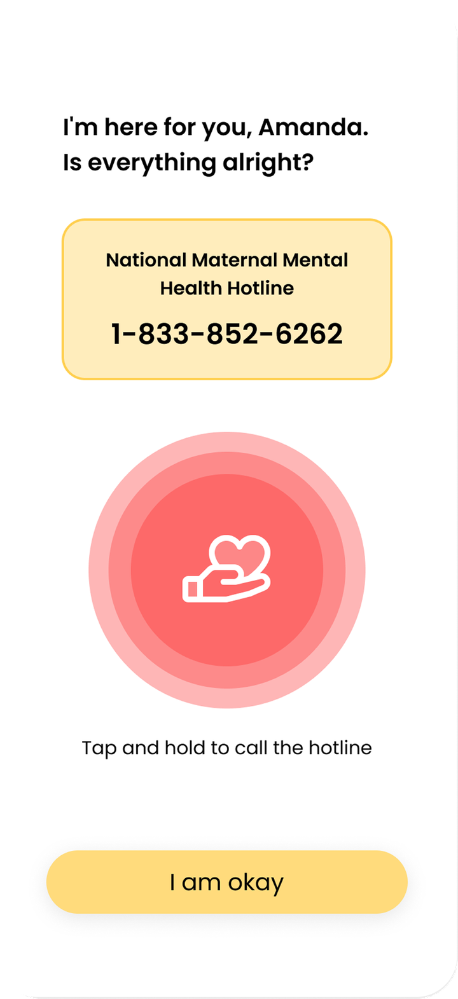
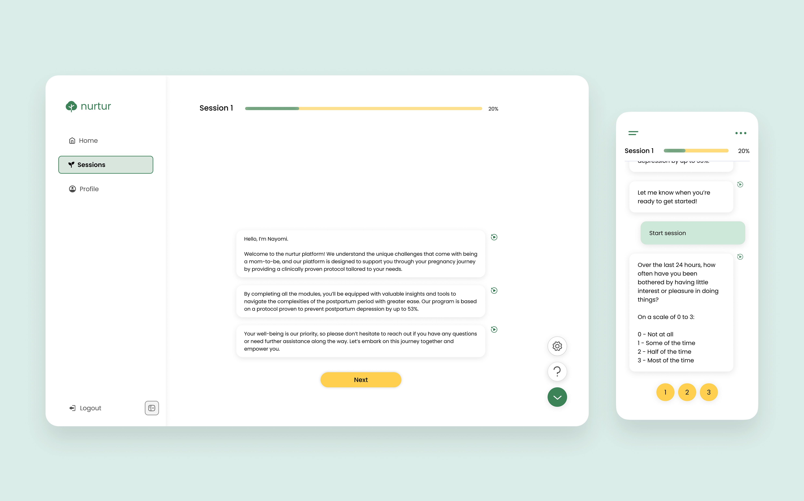
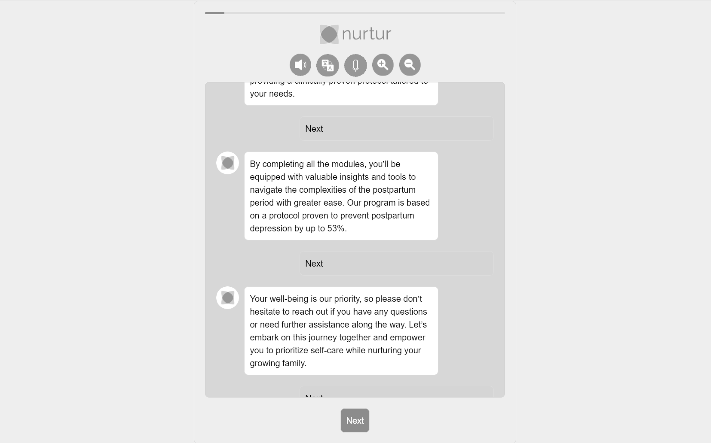
Before AfterNote: The original screen is shown in grayscale; the product's real colors are under NDA.

Busy, tired and sometimes anxious. They use the app in short moments, often on their phone, and some reach it on their hardest days.
They follow many patients and need to know who needs attention, fast.
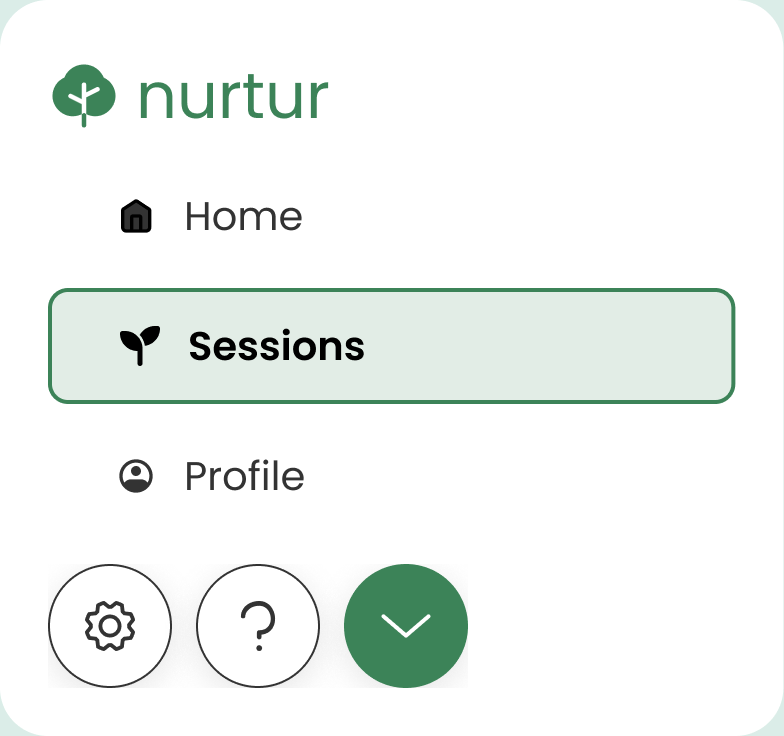
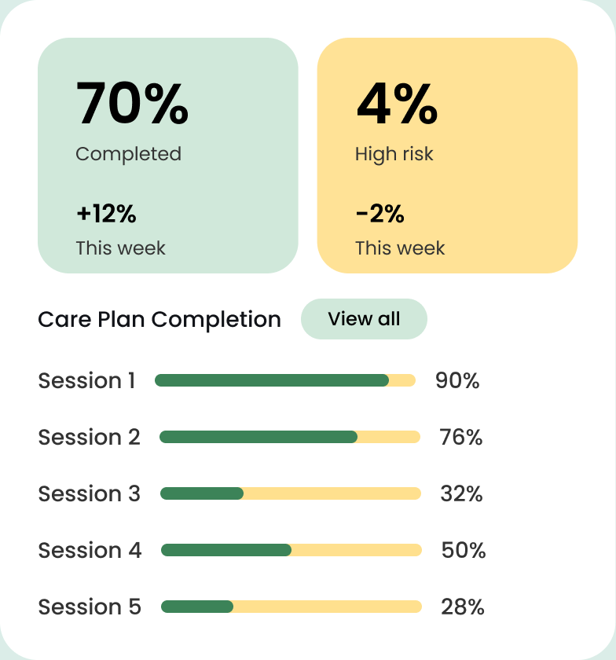
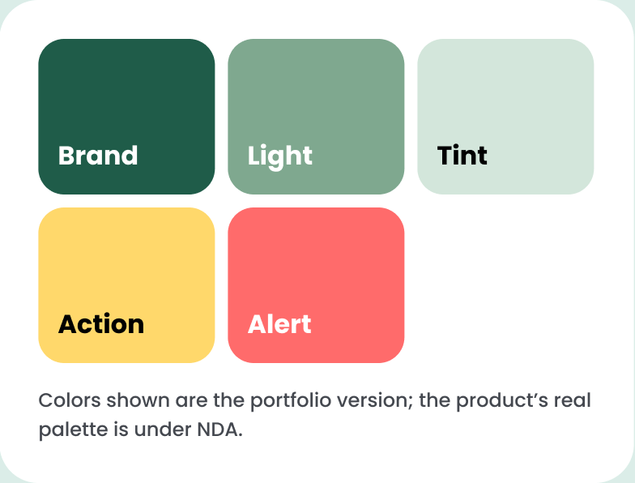
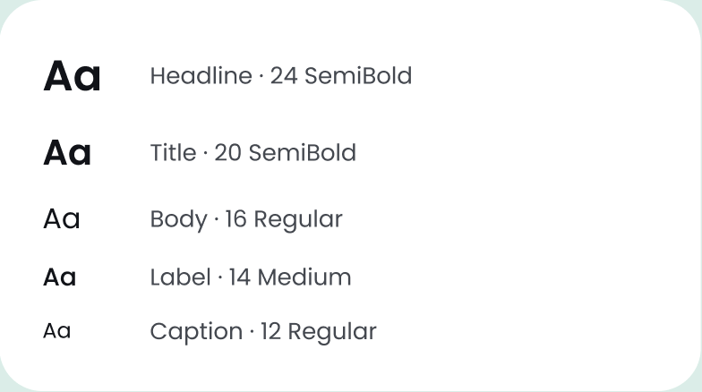
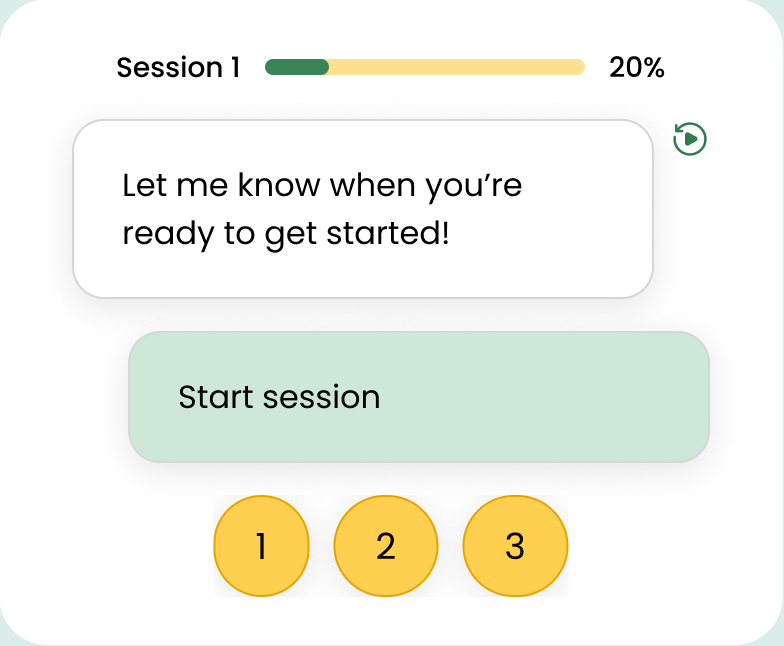
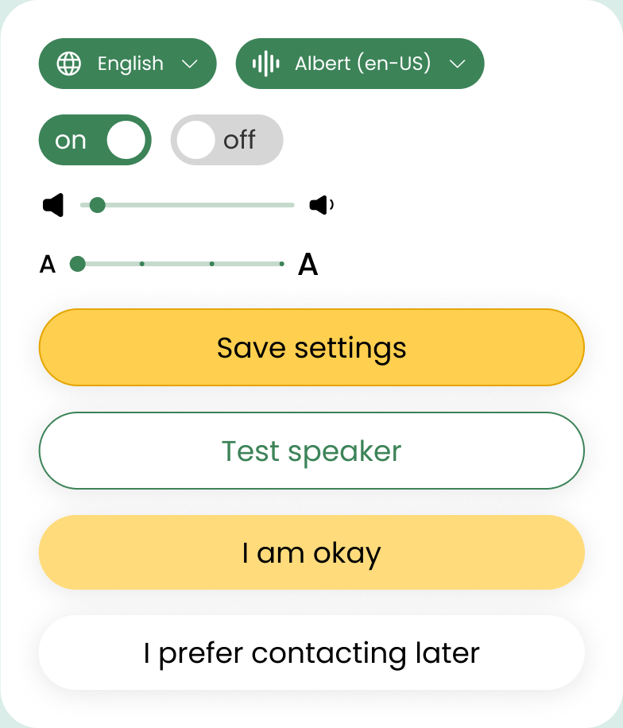
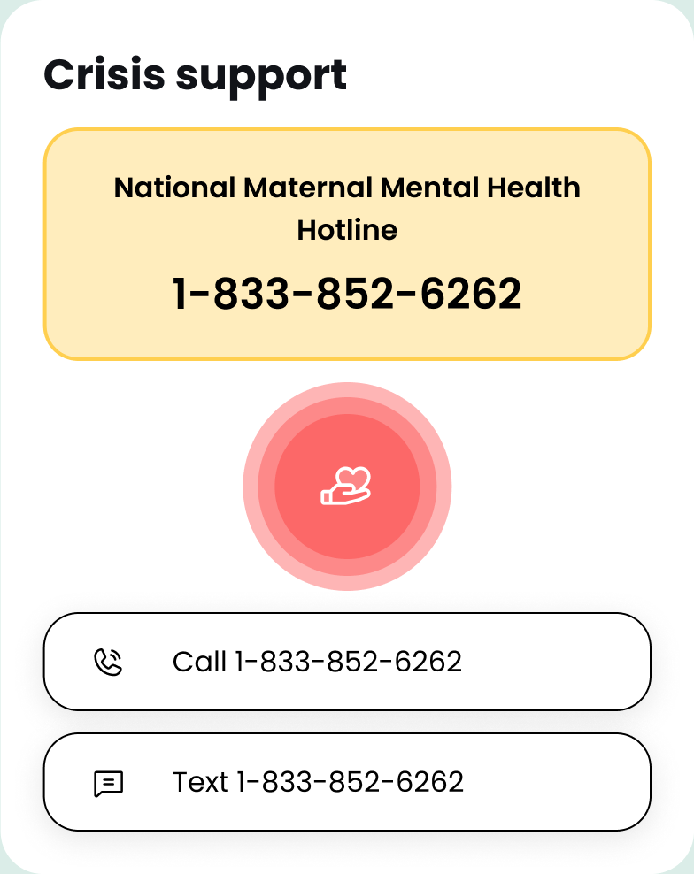
Note: Colors shown are the portfolio version; the product's real palette is under NDA.
I built nurtur's design system with one other designer, so every new screen would feel consistent. We kept the existing brand color for continuity and its calm feel, expanded the palette so every state had a color, and gave primary actions a warm accent so they stand out.
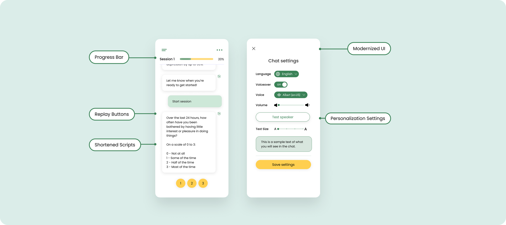
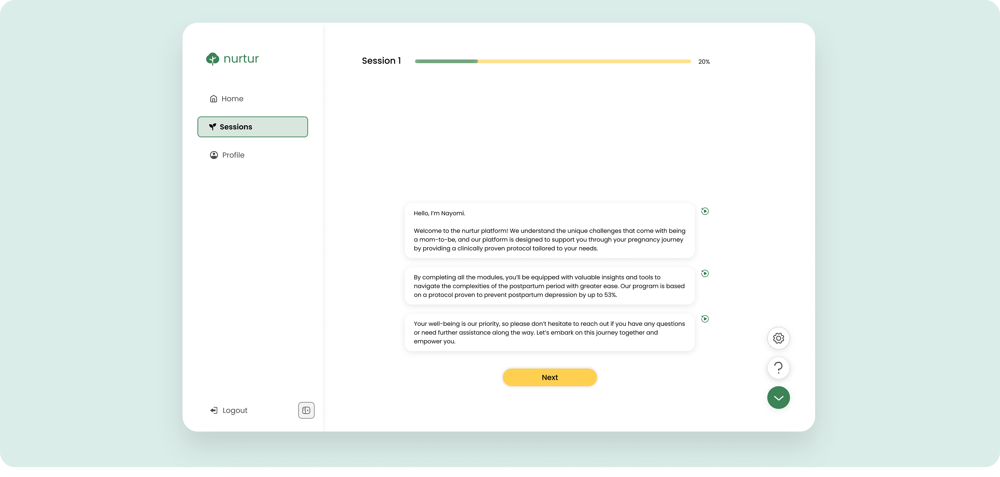
A mental health product can't only design for ordinary days. When someone feels completely overwhelmed, reaching out is hardest and matters most, so the crisis hotline had to work in a single, obvious step.
The app initiates a personalized well-being check.
Users can immediately call the hotline with a tap-and-hold action or dismiss with “I am okay.”
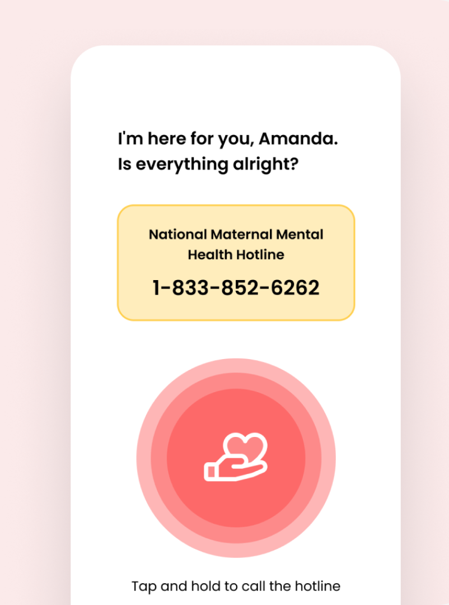
Based on responses, the app gently recommends professional support.
Users may choose to “Get help now” or “Contact later,” ensuring autonomy.
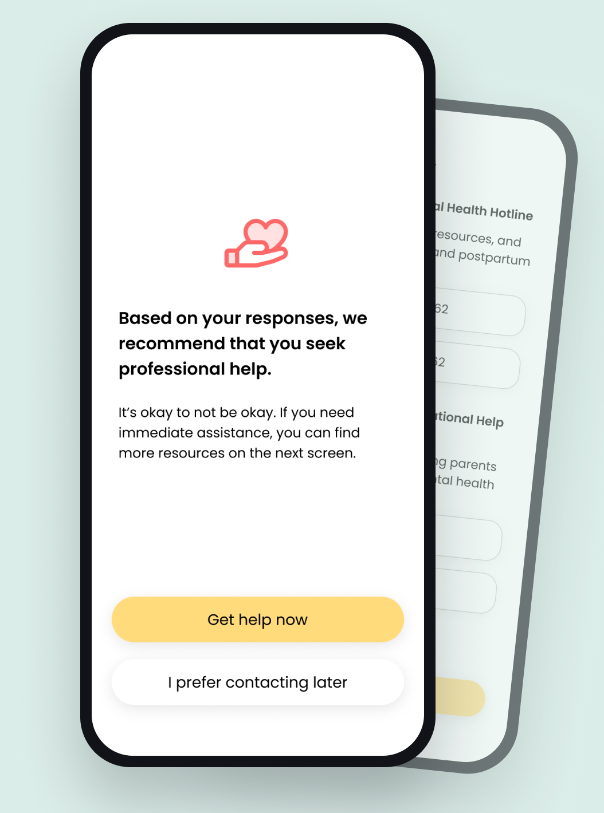
Additional hotlines are presented with both call and text options.
A Back to Home action allows users to exit when ready.
Clinicians follow their patients' progress, but they aren't trained to parse dense numbers quickly, and raw scores slowed their decisions. My first version leaned on detailed charts; I simplified it to a few key metrics, trends and color cues.
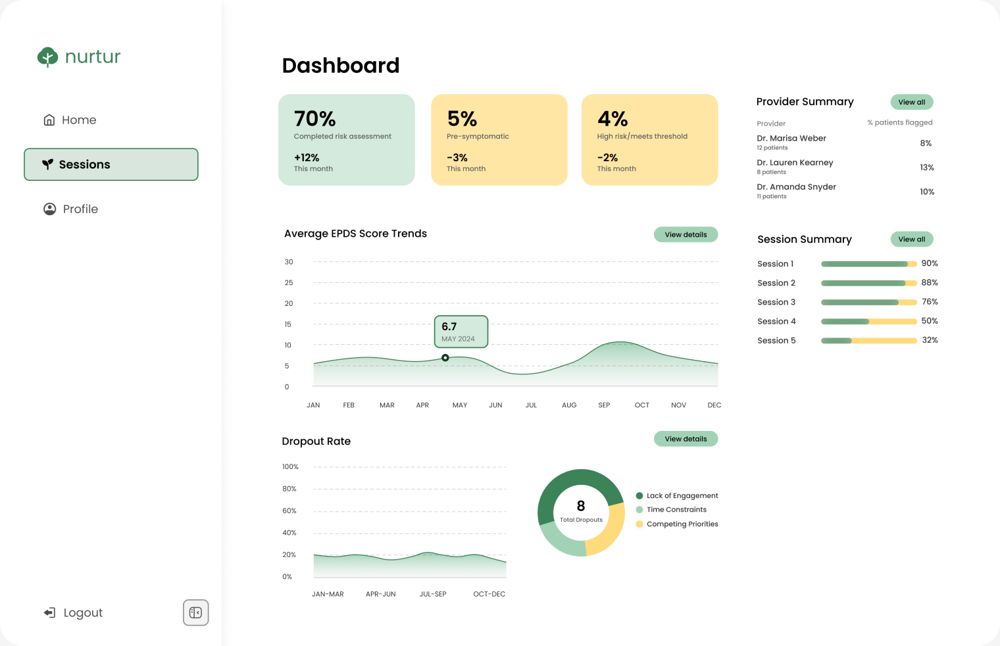
Faster first-read comprehension
Fewer clarifying clicks
Higher confidence in patient status at a glance
Designing for vulnerable moments means putting clarity, agency and recoverability first.
Working closely with clinicians and engineers in a lean team.
From the chatbot flow to the crisis hotline and the provider dashboard.
See my Agnes AI design work